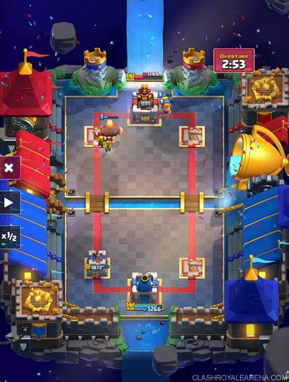

En Clash Royale, los modos de juego incluyen:
- Arena de Entrenamiento: el primer modo de juego al que tendrás acceso al comenzar a jugar.
- Duelo 1c1: uno de los modos de juego más populares.
- Desafíos Especiales: eventos temporales en los que los jugadores compiten para ganar premios exclusivos.
El modo de juego mas jugado es el 1v1 ya que es el modo mas antiguo y mas clásico.
